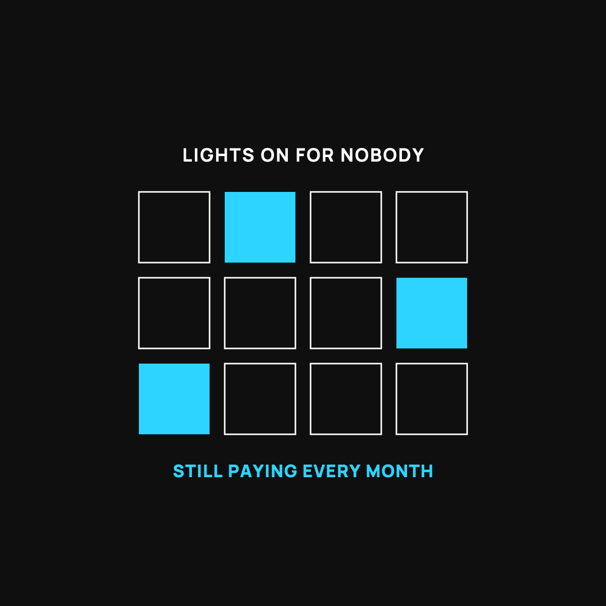

Stop Renting Your Subscriptions a Mansion
You're paying to light rooms nobody walks into. Here's the 20-minute fix.
Subscriptions are lights left on in rooms you never walk into, and the bill comes whether you're in there or not. Pull up one full month of statements, circle every repeating charge, and cancel anything you didn't use last month. Then move the money you freed into your automatic savings transfer the same day.

You are probably paying for rooms you never walk into. Not real rooms. Subscription rooms. The streaming service you watched twice, the app you signed up for during a free trial, the thing that auto-renewed while you weren't looking. Each one is a light left on in an empty room, and the bill comes every month whether you're in there or not.
The house nobody lives in
Picture a big house where every room has a light on. Sounds cozy, until you realize you only ever sit in two of them. The rest are lit up for nobody. You're paying the power bill on the whole house to live in a corner of it.
That's most people's subscriptions. You added them one at a time, each one small and reasonable. But added up, you're keeping the lights on in a mansion you don't live in.
Why you can't feel it
Subscriptions are designed to be forgettable. That's not an accident. A small charge, once a month, on autopilot, is the easiest money in the world for a company to collect, because you never have to decide to pay it again. You decided once, a year ago, and you've been paying ever since.
That's what makes them different from a normal purchase. When you buy a coffee, you feel it. When a subscription renews, you feel nothing. It's a leak you can't hear, which is exactly why I put subscriptions near the top of the money leaks most families miss.
The 20-minute walk-through
Here's the fix, and it's a one-time job. Pull up your last full month of bank and card statements. Read every line. Circle anything that repeats: streaming, apps, memberships, storage, that magazine. Write down the monthly cost next to each.
Now ask one question about each: "Did I actually use this in the last month?" If the answer is no, or "I forgot I even had it," turn that light off today. Cancel it. You can always turn it back on if you miss it, and you almost never will.
Add up what you just canceled. Multiply by twelve. That's real money, back in your pocket every year, for twenty minutes of reading.
Where the saved money should go
Don't let it just melt back into spending. The day you cancel, bump up your automatic savings transfer by the same amount. You were living without that money already. Now it's working for you instead of lighting an empty room. If you don't have that save-first move set up yet, it's Line 3 of the busy-week budget.
The takeaway
You're probably renting a mansion and living in two rooms of it. Subscriptions are lights left on for nobody, small enough that you never feel them, which is the whole trick. Spend twenty minutes reading your statements, turn off the lights in the empty rooms, and move that money to savings. It's the easiest raise you'll give yourself all year.
Questions I get about this
How do I find all my subscriptions?
Read every line of your last full month of bank and card statements. Circle anything that repeats: streaming, apps, memberships, cloud storage, that magazine. Write the monthly cost next to each one. It's a one-time, 20-minute job.
Why are subscriptions so easy to forget?
Because they're designed to be. A small charge, once a month, on autopilot, is the easiest money in the world for a company to collect. You decided once, a year ago, and you've been paying ever since. When a coffee is bought you feel it. When a subscription renews, you feel nothing.
What should I do with the money I save?
Bump up your automatic savings transfer by the same amount the day you cancel. You were already living without that money. If you don't have a save-first move yet, it's Line 3 of the busy-week budget.

Written by David Dewese
Normal guy with a full-time job, wife, and kids. Spent twenty years pursuing music and creative ventures before starting a family. Sharing tips and tricks on how to thrive while living on an artist's income. Not a financial advisor. More about me.
New here?
Normaltown USA is plain-English money and healthcare help for normal people, written by a regular guy with a family of four. No jargon, no hype. Start here, or read the FAQ.